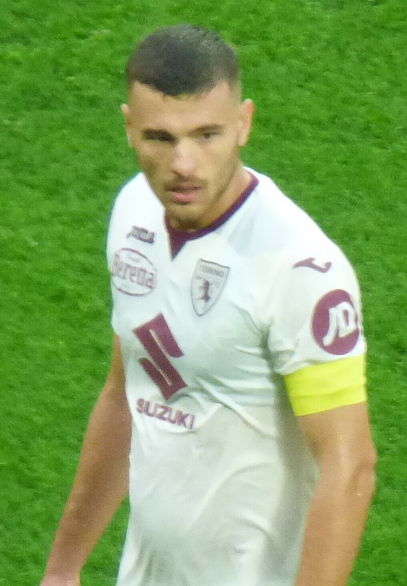
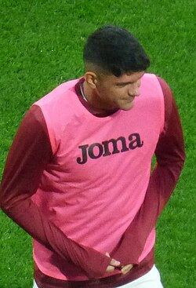
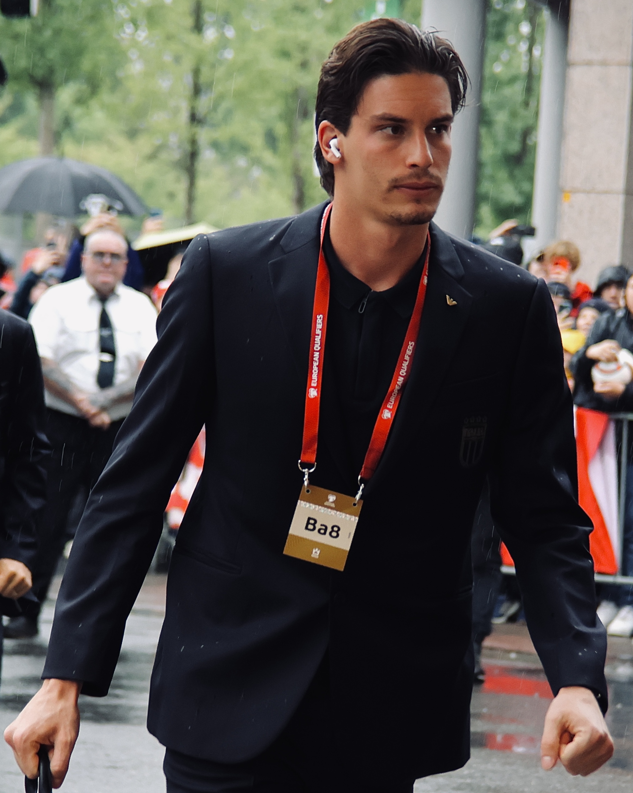
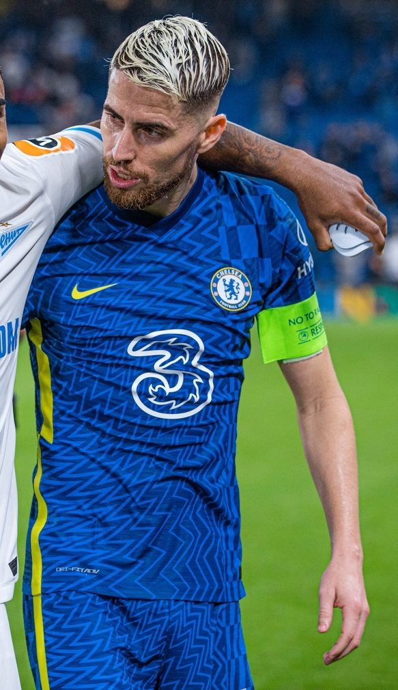
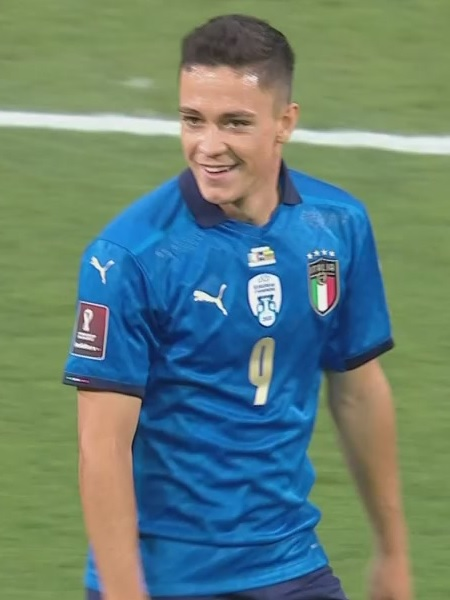
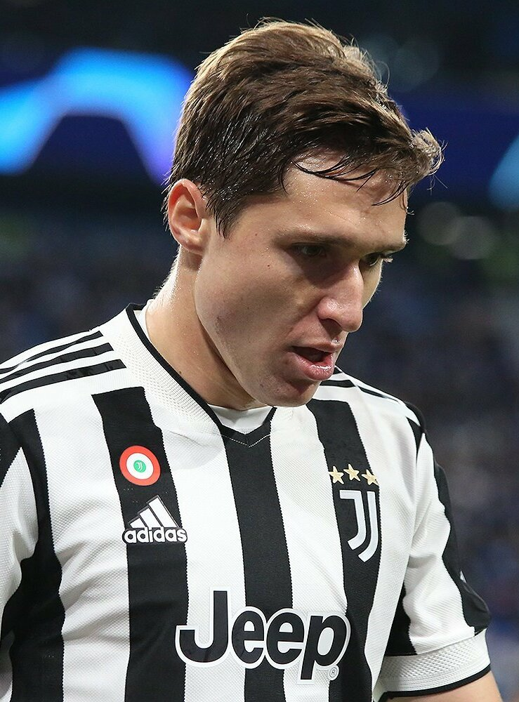
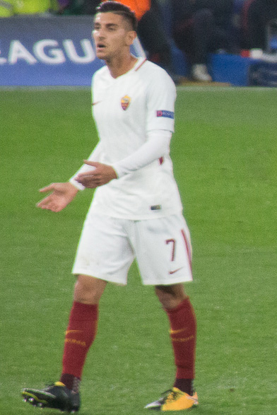
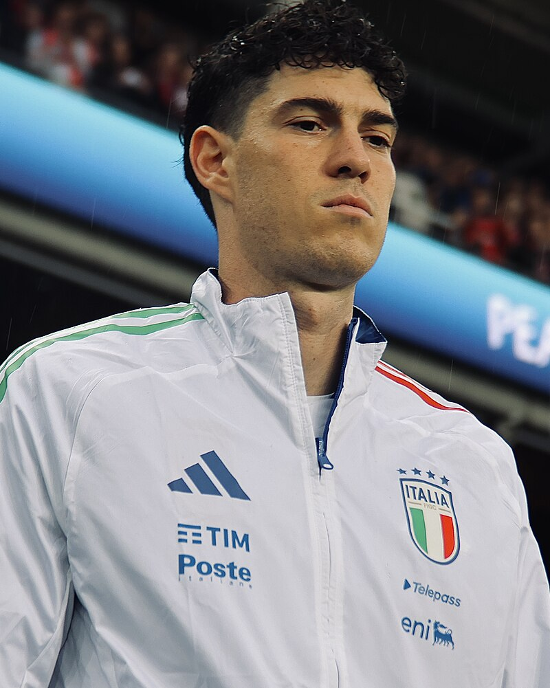
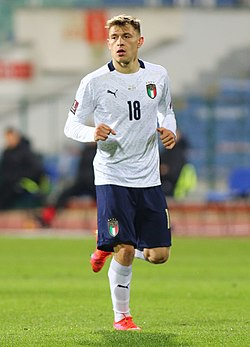
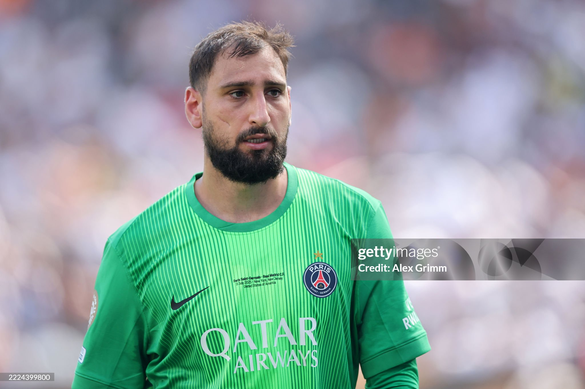

| Nombre | Posición | Edad | Bibliografía | Portada |
|---|---|---|---|---|
| Alessandro Buongiorno | Defensa central | 25 | Defensa del Napoli, sólido en marca y juego aéreo, aporta experiencia en la zaga italiana. |
 |
| Raoul Bellanova | Lateral derecho | 24 | Lateral del Atalanta, rápido y ofensivo, destaca por sus incorporaciones al ataque y precisión en los centros. |
 |
| Carnesecchi | Portero | 25 | Portero titular de Italia joven, destaca por sus reflejos, agilidad y seguridad bajo los palos. |
 |
| Dimarco | Lateral izquierdo | 28 | Lateral del Inter de Milán, rápido y ofensivo, combina buena defensa con proyección al ataque. |
|
| Jorginho | Centrocampista | 31 | Mediocampista del Flamengo, famoso por su visión de juego, pases precisos y control del ritmo del partido. |
 |
| Giacomo Raspadori | Delantero | 23 | Delantero del Atlético de Madrid, joven y rápido, destacado por su movilidad y capacidad goleadora. |
 |
| Lorenzo Chiesa | Delantero / Extremo | 26 | Delantero del Liverpool, habilidoso y rápido, aporta goles y desequilibrio por las bandas. |
 |
| Pellegrini | Centrocampista | 27 | Mediocampista de la Roma, creativo y con buena llegada, aporta asistencia y control en el medio campo. |
 |
| Bastoni | Defensa central | 25 | Defensa del Inter de Milán, sólido y seguro, destaca en anticipación, marca y salida de balón. |
 |
| Barella | Centrocampista | 28 | Mediocampista del Inter de Milán, dinámico y combativo, aporta recuperación y llegada al área rival. |
 |
| Gianluigi Donnarumma | Portero | 26 | Portero del Manchester City, famoso por su agilidad, reflejos y seguridad en situaciones de presión. |
 |